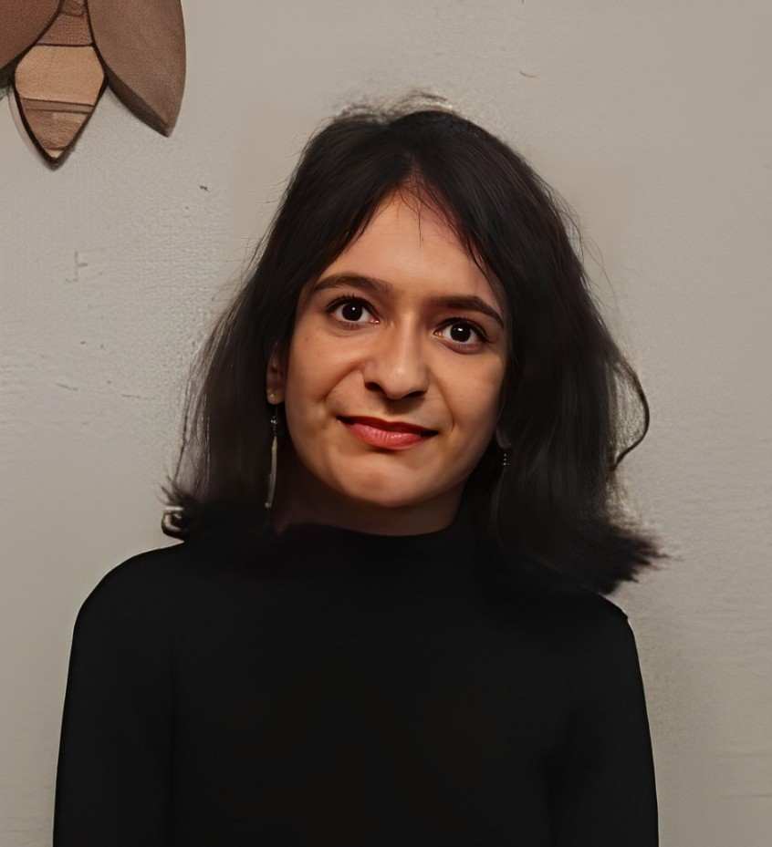
Purdue University
Robotics and Perception Researcher | Master of Science
I am a researcher at Purdue University focused on the intersection of robotics, neuromorphic vision, and multimodal perception. My work centers on using non-conventional sensing modalities as perception tools for intelligent systems that can "see" and "sense" in challenging environments. This spans object detection, terrain and material classification, and high-speed neuromorphic vision. I leverage Reinforcement Learning and Control Theory to bridge the gap between complex perception and robotic locomotion.
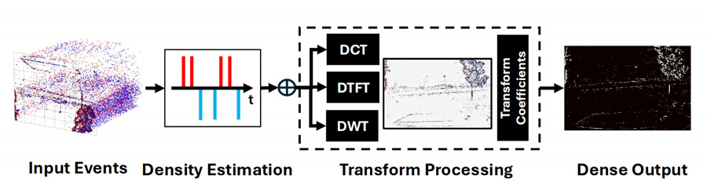
Represents each event as a Dirac impulse projected onto DCT, DTFT, and DWT basis functions for dense, compressed event volumes.
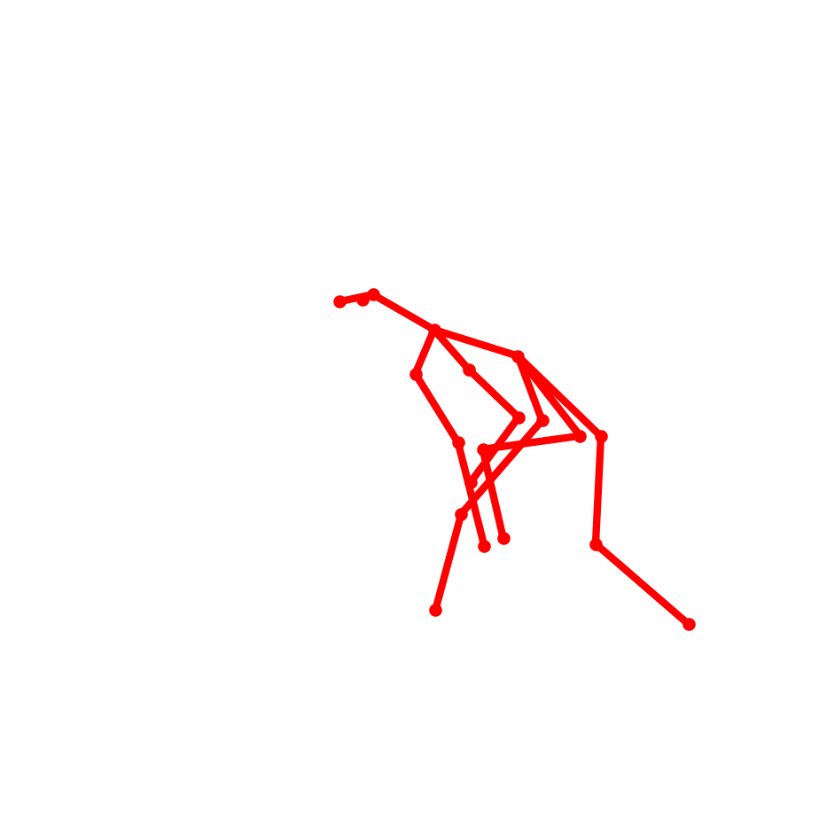
A diffusion model that forecasts animal poses ahead of time, used as a planning signal for robots monitoring animal behavior.
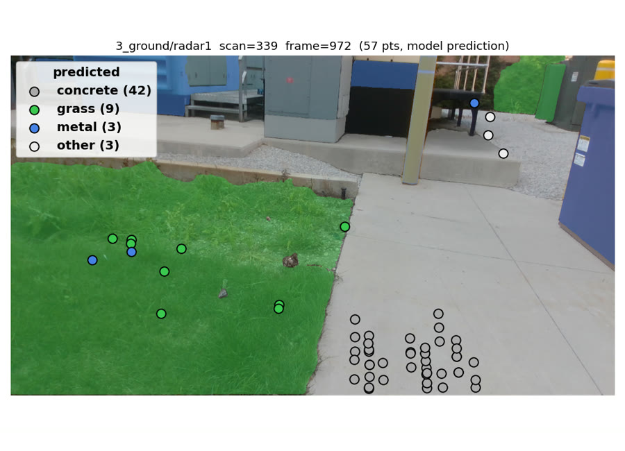
Uses mmWave radar point clouds to classify terrain underfoot, feeding gait adaptation for legged robots.
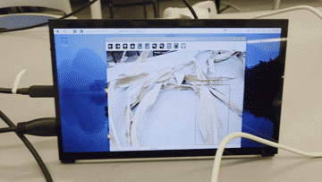
A two-stage leaf segmentation and disease classification pipeline running in real time on a Raspberry Pi.
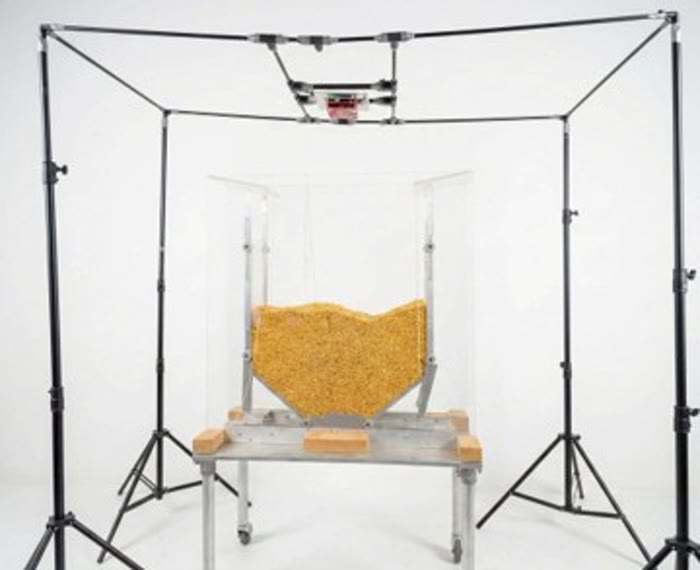
Fuses RGBD and mmWave radar to spot hidden cavities and deformities beneath grain surfaces, a safety hazard for storage workers.
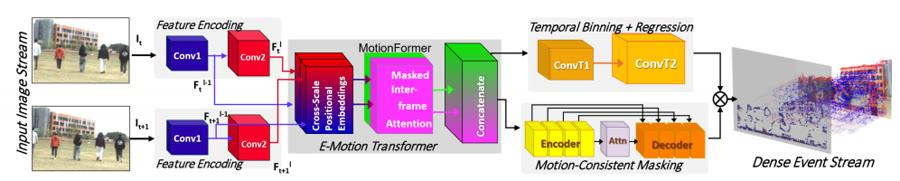
Generates synthetic event streams from ordinary frame sequences, using dual decoders for event occurrence and microsecond-precise timing.
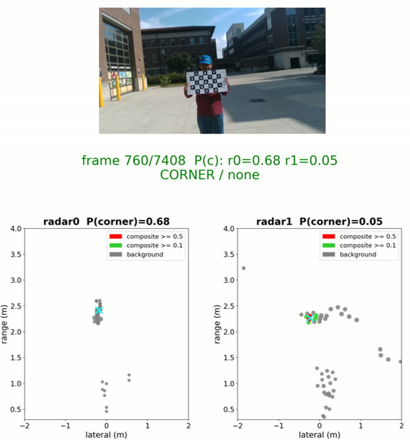
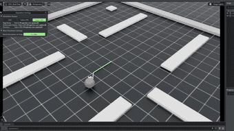
Trained actor-critic PPO policies for hexapod and tripod gaits and paired them with RRT* planning on a custom 3D-printed robot platform.
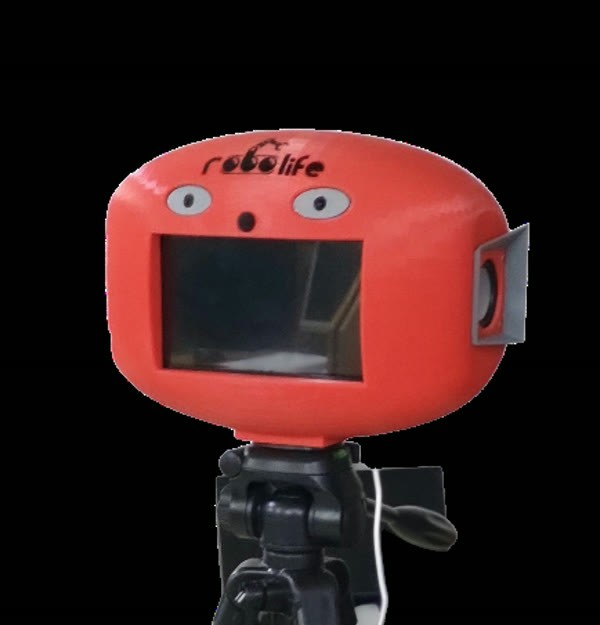
Contributed to a voice-driven, contactless patient registration system with regional-language speech recognition, later deployed in clinics. The work grew into Robolife Ltd., a faculty-led startup.
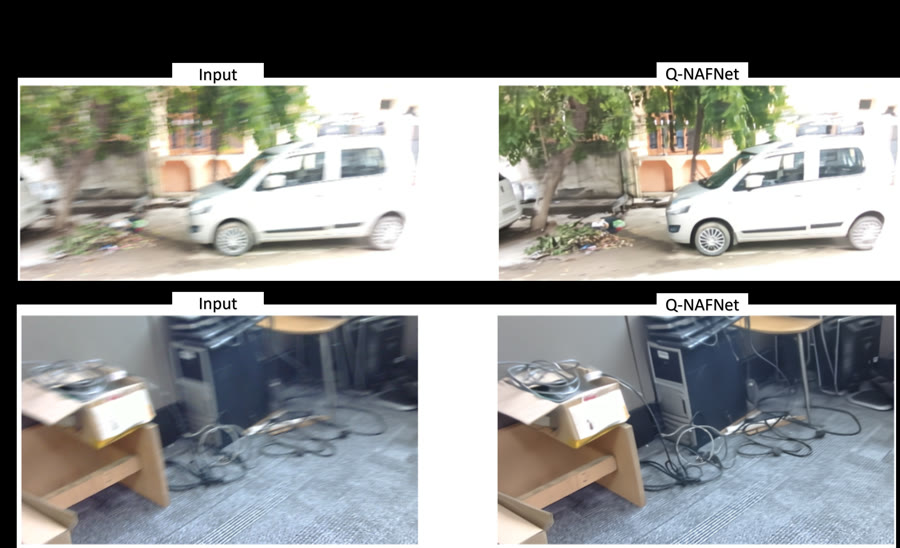
Compressed a NAFNet deblurring model from 259MB to 14.5MB, reaching 16× faster inference in software and 40× on hardware while keeping 95% of the original accuracy.